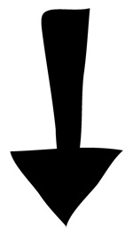

Breakups suck. Especially that last bit, depending on how long you guys dragged it out. The lack of caring. Picking at each other for no good reason. Maybe she even started openly flirting with other guys (you know, like laughing at their stupid jokes and hitting them playfully). Coming up with excuses not to hang out as much... Lack of sex. You know the story. It's pretty much the same one for everyone with only slight variation.
And I'm sure by now you've already Googled "how to get my girlfriend back" or something to that effect. The truth is, there's lots of misinformation out there. Lots of free, crappy information and lots of outdated products you should stay away from. There are a few good ones though, but the majority are crap. Just being honest.
If you want a good starting place, get the basics down first.
That means you need to stop acting desperate. I get it, you loved her, but clearly the feeling is not mutual, otherwise she'd be with you right now. And she's not. Stop texting her all the bloody time. Stop calling her. Stop apologizing (assuming you didn't do anything substantially wrong). Stop supplicating toward her right this minute! This demonstrates lower value and women don't respond to guys like that.
The reason she gave you for the breakup is almost certainly not the real reason. The real reason is simple: She lost attraction for you. Either she didn't want to overtly say this and hurt your feelings, or she herself doesn't fully understand.
For you right now, the key is to limit contact with your ex or depending on the dynamic, eliminate contact altogether for about three weeks. You want to throw her off balance by mixing up your pattern a bit. If you text her "I love you" every night, stop. In fact, after a breakup you shouldn't be saying "I love you" at all, unless you completely fucked up and cheated on her or something like that. You want to switch up the pattern she's grown accustomed to.
Now I really want you to sit down and think about the person you were when you guys first started dating. Ask yourself what changed? How did you go from being the guy you once were to what you are now (probably a groveling fool). Sorry, I don't mean to insult you, I've been where you are too. Everybody has at one point or another.
You want to change yourself back to the person you were. There guy she was attracted to in the beginning. The guy she fell in love with. Maybe you added a few notches to your belt? Maybe you went from being a confident guy to handing your balls over to her in a neatly wrapped box with a bow on top? I see that sort of thing all the time.
Search your soul. Only YOU can figure out in what way you changed that would cause her to lose interest in you. I don't know you.
And finally, get a life. Most guys in relationships (the ones who get dumped) tend to drift toward making the woman the center of their universe. Bad idea. Once she HAS you completely, there is no longer any interest. It's like a cat chasing a toy. Once the cat catches the toy, not long after it loses interest.
So get your old life back. Go out with the guys and have a few beers at your local favorite pub. Go on dates again, buy some killer new clothes, and above all else, start valuing yourself again.